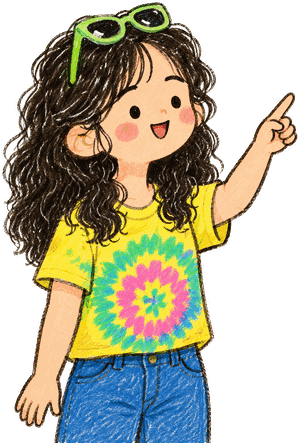
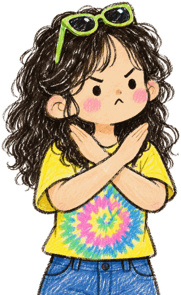
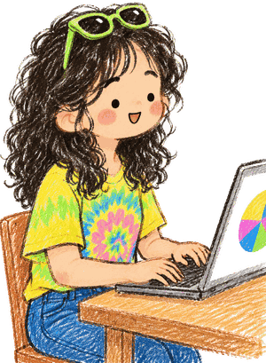
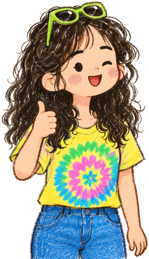

对新东西，先做一个小实验
把一个周末留给散步、观察和动手。
→ 先试一个能在一天内完成的版本。
✦ 示例人物与示例规划，请替换成自己的记录。

从真实经历里找重复出现的行为。这里的示例请换成你自己的记录。
把这一小步做完，再开始下一步。
把这一小步做完，再开始下一步。
把这一小步做完，再开始下一步。
把这一小步做完，再开始下一步。
把一个周末留给散步、观察和动手。
→ 先试一个能在一天内完成的版本。
记录过程和遇到的问题，比只展示结果更有意思。
→ 写下一个别人能照着做的步骤。
一段专注的时间，加一段出去走走的时间。
→ 把休息也排进计划。
衡量一个项目时，也看它做完后给自己的感受。
→ 记录自己的选择理由。
不是心理测评；用具体行为、证据和适用场景描述自己。

示例证据：朋友看过步骤后能复现。
→ 适用：教程、分享会、个人介绍。
示例证据：散步时记下三种不同的店招。
→ 适用：城市记录、选题、设计。
示例证据：把旅行笔记整理成地图。
→ 适用：清单、模板、复盘。
记录自己的语言习惯，不用套成统一的人设。
今天散步的时候，我发现了一家……
→ 把场景说具体。
我先试了这个版本，然后改了一处。
→ 放出前后对比或过程截图。
你也可以从自己的一个小记录开始。
→ 给一个步骤、一份模板或一个作品。
让机会经过自己的尺度，而不是让每个机会都变成任务。

临时任务来了，先看有没有打断休息。
→ 约定清楚截止日期。
新想法先放进待尝试清单。
→ 下次复盘再决定。
哪些我负责，哪些需要别人参与。
→ 用一页说明对齐。
把生活、作品和项目放在同一张地图里。

记录街道、食物和见到的人。
→ 每周一页散步笔记。
把照片和记录编成一份分享页。
→ 先做 4 页的小版本。
用自己真的用过的内容做例子。
→ 先请一位朋友试用。
把卡点写成可调整的动作，先解决一个。
先完成一个能打开的页面。
→ 今天只做首页。
把新想法暂存，每周固定挑一次。
→ 保留一个进行中的作品。
作品完成当天，留一张截图和三句话。
→ 记录：做了什么、学到什么、下次改什么。
计划要能执行，也要允许调整。

选一个最想做的动作，留出专注时间。
→ 晚上记下一句今天的发现。
看看什么让自己充电、什么需要减量。
→ 选下周的一个重点。
哪些想继续，哪些可以暂时放下。
→ 更新这一页人生系统。
按自己的兴趣和余量选一个，不必同时开始。
复用已有照片和路线，先发给朋友。
→ 一个周末能完成。
先讲一个真实做过的小项目。
→ 确认准备时间后再决定。
容易把时间切得太碎。
→ 留在待尝试清单。
它是一页持续修订的个人说明书。今天先从一件真实发生的小事开始。